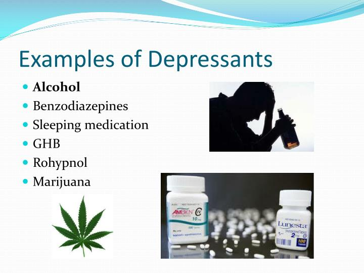

Depressants
Depressants (also called narcotics) are psychoactive drugs that cause drowsiness, sleep, and insensibility. Many depressants prevent the release of neurotransmitters. This stops neuron stimulation, which produces feelings of relaxation. Other depressants mimic neurotransmitters that prevent the feeling of pain and cause a dull, relaxed state of mind. Most depressants are available only through prescriptions from medical doctors. However, one of the most powerful and addictive of all depressants is alcohol—and it is legal. Marijuana is also recently become a depressant that can be consumed legally in Canada. The two most common types of illegal depressants are opiates and barbiturates.
